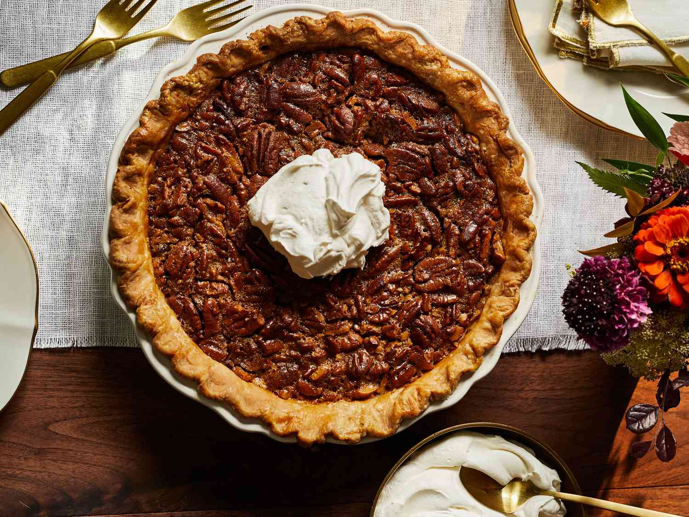

The Best Pecan Pie

Make this traditional all-American Thanksgiving dessert for a celebratory dinner party. Our classic pecan pie recipe is best served with whipped cream or a scoop of ice cream
Ingredients
- Flour, for dusting
- 500g pack sweet shortcrust pastry
- 75g butter, softened
- 100g golden caster sugar
- 175g golden syrup
- 175g maple syrup
- 3 eggs, beaten
- ½ tsp vanilla extract
- 300g pecan halves
- Double cream, whipped, to serve
Steps
- On a lightly floured surface, roll out the pastry. Use the pastry to line a 23cm tart tin, keeping any off-cuts in case you need to fill any cracks after blind-baking. Prick the base of the pastry case with a fork and chill for 30 mins, or until firm.
- Heat oven to 190C/170C fan/gas 5. Line the pastry case with baking parchment, fill with baking beans and bake for 15-20 mins until the sides are set. Remove the beans and parchment and return the tin to the oven for 5-10 mins until the pastry is golden and the base is set. Leave to cool
- Increase oven to 200C/190C fan/gas 6. Use an electric whisk to beat the butter and sugar together until light and fluffy. Keep the beaters going and pour in both of the syrups. Gradually add the eggs, ¼ tsp salt and the vanilla, then whisk until combined. Stir through the pecans, then pour the mixture into the tart case. Bake for 10 mins.
- Turn heat down to 160C/140C fan/gas 3 and continue baking for 30-35 mins (the pie should be golden brown and the filling should wobble a little in the centre when shaken). Leave to cool in the tin. You’ll probably need to run a knife around the tin to lift out the pie. Serve with whipped cream or ice cream.